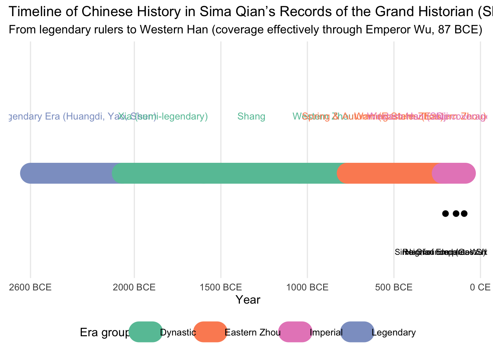

# install.packages(c("ggplot2","dplyr","scales")) # uncomment if needed
library(ggplot2)
library(dplyr)
Attaching package: 'dplyr'The following objects are masked from 'package:stats':
filter, lagThe following objects are masked from 'package:base':
intersect, setdiff, setequal, unionlibrary(scales)
# -----------------------------
# Data: Eras emphasized in Sima Qian's Shiji
# BCE years are negative; CE are positive.
# Shiji coverage effectively ends with Emperor Wu (87 BCE).
# -----------------------------
eras <- tibble::tribble(
~era, ~start, ~end, ~group,
"Legendary Era (Huangdi, Yao, Shun)", -2600, -2070, "Legendary",
"Xia (semi-legendary)", -2070, -1600, "Dynastic",
"Shang", -1600, -1046, "Dynastic",
"Western Zhou", -1046, -771, "Dynastic",
"Spring & Autumn (Eastern Zhou)", -770, -476, "Eastern Zhou",
"Warring States (Eastern Zhou)", -475, -221, "Eastern Zhou",
"Qin", -221, -206, "Imperial",
"Western Han (Shiji coverage → 87 BCE)",-206, -87, "Imperial"
)
# Optional key events to annotate
events <- tibble::tribble(
~label, ~year,
"Han founded (Gaozu)", -202,
"Reign of Emperor Wu begins", -141,
"Sima Qian completes Shiji (~94 BCE)", -94
)
# -----------------------------
# Plot
# -----------------------------
# set a simple palette by group (edit as you like)
pal <- c(
"Legendary" = "#8da0cb",
"Dynastic" = "#66c2a5",
"Eastern Zhou"= "#fc8d62",
"Imperial" = "#e78ac3"
)
# Build a bar-like timeline with geom_segment
p <- ggplot() +
geom_segment(
data = eras,
aes(x = start, xend = end, y = 0, yend = 0, color = group),
linewidth = 10, lineend = "round"
) +
# era labels centered
geom_text(
data = eras %>% mutate(mid = (start + end)/2),
aes(x = mid, y = 0.2, label = era, color = group),
size = 3.5, angle = 0, vjust = 0
) +
# key event markers
geom_point(
data = events,
aes(x = year, y = -0.15),
size = 2.5
) +
geom_text(
data = events,
aes(x = year, y = -0.28, label = label),
size = 3, vjust = 1
) +
scale_color_manual(values = pal, guide = guide_legend(title = "Era group")) +
scale_x_continuous(
breaks = c(-2600, -2000, -1500, -1000, -500, 0),
labels = function(x) ifelse(x < 0, paste0(abs(x), " BCE"), paste0(x, " CE"))
) +
coord_cartesian(ylim = c(-0.35, 0.45)) +
labs(
title = "Timeline of Chinese History in Sima Qian’s Records of the Grand Historian (Shiji)",
subtitle = "From legendary rulers to Western Han (coverage effectively through Emperor Wu, 87 BCE)",
x = "Year", y = NULL
) +
theme_minimal(base_size = 12) +
theme(
axis.text.y = element_blank(),
axis.ticks.y = element_blank(),
panel.grid.major.y = element_blank(),
panel.grid.minor = element_blank(),
legend.position = "bottom"
)
print(p)
# Save image
ggsave("shiji_timeline.png", p, width = 12, height = 4.5, dpi = 300)